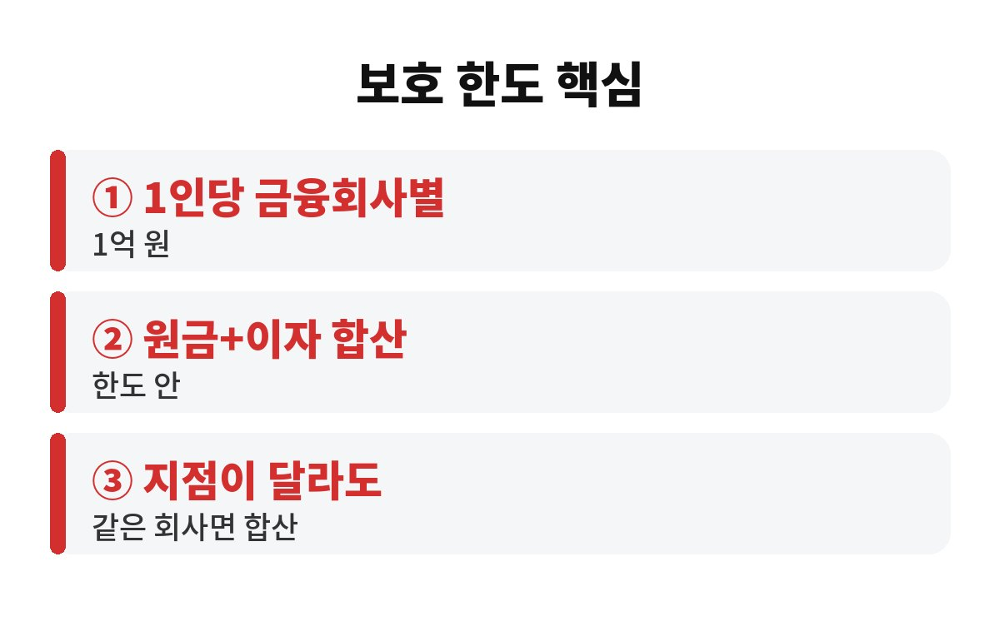

예금자보호 한도는 금융회사 한 곳당 1인 기준 원금과 이자를 합쳐 1억 원까지예요. 예전 5천만 원에서 올라간 금액이라 마음이 놓이지만, 이자까지 한도에 들어간다는 점은 놓치기 쉽습니다.
만기 앞둔 목돈 예금이 있다면 지금 한 번 계산해 보세요. 딱 1억 원을 넣어 뒀는데 이자가 붙어 한도를 넘어가면 그 초과분은 어떻게 될까요?
예금자보호는 은행이나 저축은행 같은 금융회사가 영업정지나 파산으로 돈을 돌려주지 못할 때 예금보험공사가 대신 지급해 주는 제도입니다. 보호 한도는 금융회사별, 1인당 기준이에요. 같은 은행이라면 본점에 넣든 지점 여러 곳에 나눠 넣든 합산해서 계산합니다.
여기서 중요한 건 원금만 보는 게 아니라는 거예요. 원금과 약정한 이자를 합친 금액이 한도 안에 들어와야 합니다. 그래서 원금이 한도에 가까운 예금은 이자가 붙는 만큼 보호받지 못하는 구간이 생길 수 있어요. 예금자보호 한도를 말할 때 "원금 1억"이 아니라 "원금과 이자 합쳐 1억"이라고 기억해 두세요.
네, 금융회사가 다르면 한도도 따로 적용됩니다. 그러니 목돈이 크다면 한 곳에 몰아 두기보다 나눠 두는 쪽이 안전해요. 다만 같은 금융그룹 계열사라도 법적으로 별개의 회사면 각각 계산되고, 반대로 한 회사의 여러 지점은 한 덩어리로 묶인다는 점만 알아 두면 됩니다.
| 상황 | 한도 계산 |
| 같은 은행 지점 여러 곳 | 합산해서 한도 적용 |
| 서로 다른 금융회사 | 각각 따로 한도 적용 |
| 원금 + 이자 | 합쳐서 한도 적용 |

맞아요. 모든 금융상품이 보호 대상은 아닙니다. 예금보험 대상 금융회사의 예금이라도 상품에 따라 제외되는 경우가 있어요. 대표적으로 주식이나 펀드처럼 원금 손실 가능성이 있는 투자상품은 보호 대상이 아니라고 알려져 있습니다. 가입한 상품 설명서에 "예금자보호 대상 여부"가 적혀 있으니 꼭 눈으로 확인하세요.
또 하나, 보호 대상 금융회사인지 여부도 확인해야 합니다. 이름이 비슷해도 예금보험공사에 가입한 곳인지는 별개 문제거든요. 금융회사 이름을 검색해서 보호 대상인지 확인하는 습관을 들이면 훨씬 마음이 편합니다.
가능해요. 예를 들어 원금 9천만 원짜리 예금이 있어도 같은 은행에 적금이나 다른 예금이 따로 있다면 전부 합산해서 봅니다. 여기에 만기 때 붙을 이자까지 더하면 어느새 1억 원 선에 닿는 경우가 의외로 많아요. 특히 금리가 높을 때 가입한 상품일수록 이자가 커서 한도에 더 빨리 가까워집니다.
그래서 만기 한두 달 전에 은행 앱에서 내 예금 합계를 한 번 뽑아 보는 습관을 추천해요. 계산기 앱에 원금과 예상 이자를 더하면 5분이면 끝납니다. 한도에 딱 걸려 있다면 재예치할 때 금융회사를 나누는 것만으로도 걱정이 사라져요.
그리고 한도를 넘는다고 해서 무조건 큰일 나는 건 아니에요. 은행이 문제를 일으킬 가능성은 아주 낮고, 이 제도는 만일을 위한 안전망이니까요. 다만 내 목돈이 한 곳에 몰려 있다면 안전망을 두 겹으로 만들어 두는 게 현명합니다.
어렵지 않아요. 첫째, 금융회사별로 내 예금 원금과 받을 이자를 더해 봅니다. 둘째, 1억 원에 가까운 곳이 있다면 만기 때 일부를 다른 금융회사로 옮길지 생각해 보세요. 셋째, 높은 금리만 보고 낯선 곳에 큰돈을 넣는 건 한 번 더 따져 보고요. 금리 0.3%p 차이로 얻는 이자보다 원금이 지켜지는 안심이 더 클 때가 많습니다.
가족 명의로 나눠 넣는 방법도 있지만, 증여나 세금 문제가 걸릴 수 있으니 금액이 크다면 은행 창구나 세무 전문가에게 먼저 물어보는 게 좋아요. 예금자보호 한도는 올랐어도 내 돈을 지키는 건 결국 내가 하는 점검이거든요.
여러분은 예금이 몇 개 금융회사에 나뉘어 있나요? 댓글로 알려 주시고, 도움이 되셨다면 구독해 두세요. 다음 글에서 또 쓸모 있는 돈 이야기로 찾아올게요.
※ 본 글은 일반 정보이며 투자 권유가 아닙니다. 제도 내용은 변경될 수 있으니 예금보험공사 등에서 최신 내용을 확인하세요.